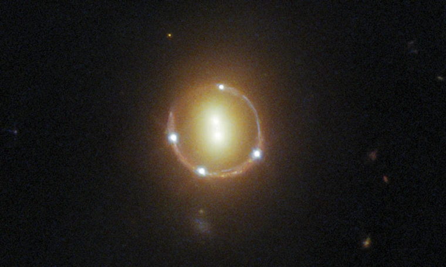
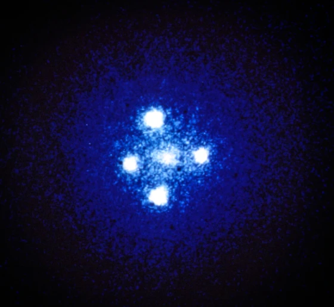

ဒီ ထူးဆန်းတဲ့ သဘာဝ ကို အိုင်းစတိုင်းက စတင်ပြီး ဟောကိန်းထုတ်ခဲ့တာမို့ သူ့ကို ဂုဏ်ပြုတဲ့ အနေနဲ့ အိုင်းစတိုင်း လက်စွပ် (Einstein Ring) လို့ အမည်ပေးထားတာ ဖြစ်ပါတယ်။
ဒီဓါတ်ပုံမှာ (အောက်ပုံကြည့်ရန်) အလယ်မှာ မြင်ရတဲ့ အလင်းရောင် ၂ စက်က ကြယ်စု (ဂလက်ဆီ) ကြီး ၃ ခု ဆီက အလင်းရောင် ဖြစ်ပါတယ်။ သူ့ဘေးနားက အလင်းရောင် အစက် ၄ စက်က ဂလက်ဆီ ၄ ခုဆီက လာတဲ့ အလင်းရောင်တွေ မဟုတ်ပါဘူး။ အဲ့သည် အစက် ၄ စက်လုံးဟာ ဂလက်ဆီ တစ်ခုထဲ ဆီကနေ လာတဲ့ အလင်းရောင်တွေ ဖြစ်ကြပါတယ်။ ပိုပြီး ထူးဆန်းတာကတော့ အဲ့သည် ဂလက်ဆီကို အလယ်က အစက် ၂ စက်ထဲမှာလဲ မြင်တွေ့ရခြင်းပဲ ဖြစ်ပါတယ်။
ပုံမှန် ဆိုရင်တော့ ဒီလောက်ဝေးတဲ့ နေရာက ကွေဆာ ကို မြင်ရမှာ မဟုတ်ပါဘူး။ ဒါပေမယ့် ဒီ ကွေဆာ နဲ့ ကျွန်တော်တို့ ကမ္ဘာမြေရဲ့ ကြားထဲက အလင်းနှစ် ၃ ဘီလီယံ (သန်း ၃,၀၀၀) လောက် ဝေးတဲ့ နေရာမှာ ဂလက်ဆီ ၂ စင်း ရှိနေပါတယ်။ ဒီ ဂလက်ဆီ တွေရဲ့ ဆွဲငင်အားကြောင့်မို့ ဒီ ကွေဆာက လာတဲ့ အလင်းတန်းတွေဟာ ဖြောင့်ဖြောင့်တန်းတန်း မလာတော့ပဲ အချို့က ကွေးသွားကြပါတယ်။
ဒီကွေးသွားတဲ့ အလင်းတန်း တွေကြောင့်မို့ ပတ်ခြာလည်မှာ ခပ်ကွေးကွေး ဂလက်ဆီ တွေ အနေနဲ့ ပုံရိပ်မြင်ရခြင်းပဲ ဖြစ်ပါတယ်။ ဒါ့ကြောင့် ဒီပုံမှာ ကွေးလာတဲ့ အလင်းတန်း တွေကြောင့် ပတ်ခြာလည်က ပုံရိပ် ၄ ခုနဲ့ တည့်တည့်လာတဲ့ အလင်းတန်းတွေကြောင့် ခလယ်မှာ ပုံရိပ် တစ်ခု စုစုပေါင်း ပုံရိပ် ၅ ခု ပေါ်လာတာပဲ ဖြစ်ပါတယ်။

အိုင်းစတိုင်း ခေတ်ကတော့ နက္ခတ်ကြည့် တယ်လီစကုပ် တွေက အားမကောင်းသေးတော့ ဒီ သဘာဝနဲ့ ပါတ်သက်လို့ အခြား သက်သေတော့ သိပ်များများ မတွေ့ခဲ့ရပါဘူး။ ၁၉၇၉ ခုနှစ်ရောက်မှ အဝေးက ကွေဆာ (quasar) ဂလက်ဆီကြီး တစ်ခုရဲ့ ပုံရိပ်ကို ကမ္ဘာပေါ်ကနေ နှစ်ခု အနေနဲ့ မြင်ရတာကို ပြသနိုင်ခဲ့ပါတယ်။ ဒီဖြစ်စဉ်မှာ အလင်း ကွေးသွားတာဟာ မှန်ဘီလူးကြောင့် အလင်း ကွေးသွားတာနဲ့ ခပ်ဆင်ဆင် တူတာမို့ ဒီ သဘာဝကို ဆွဲအား မှန်ဘီလူး (gravitational lens) လို့ အမည်ပေးခဲ့ ကြပါတယ်။

အိုင်းစတိုင်း လက်စွပ် အများစုကတော့ လက်စွပ်လို ကွင်းလေး ပေါ်နေတာ မဟုတ်ပဲ ကြက်ခြေခတ်ပုံ ပေါ်နေတာ ပိုများပါတယ်။ သူ့ကိုတော့ အိုင်းစတိုင်း ကြက်ခြေခတ် (Einstein Cross) လို့ အမည်ပေးထားပါတယ်။ ဒီ အိုင်းစတိုင်း ကြက်ခြေခတ် မှာတော့ အဝေးက ဂလက်ဆီကို အနီးက ဂလက်ဆီရဲ့ ဘေးမှာ အစက် ၄ စက် အနေနဲ့ မြင်ရတာပဲ ဖြစ်ပါတယ်။ (အောက်ပုံကြည့်ရန်)

“ဒီ အိုင်းစတိုင်း လက်စွပ်နဲ့ အိုင်းစတိုင်း ကြက်ခြေ တွေ ဟာ ဘာကို ပြနေလဲ ဆိုတော့ အနီးအနားက ဂလက်ဆီ တွေ ထဲမှာ ကျွန်တော်တို့ မြင်ရတဲ့ ဒြပ်ထုထက်ကို ပိုတဲ့ ဒြပ်ထုတွေ ရှိနေတယ် ဆိုတာကို ပြနေပါတယ်။ ဒီ မမြင်ရတဲ့ ဒြပ်ထုဟာ အဖြစ်နိုင် ဆုံးကတော့ Dark Matter ခေါ်တဲ့ “အမှောင်ဒြပ်” ပဲ ဖြစ်ပါတယ်” လို့ အမေရိကန် ပြည်ထောင်စု လော့စ်အိန်းဂျလိစ် မြို့က ဂရစ်ဖစ် နက္ခတ်လေ့လာရေး စခန်း (Griffith Observatory in Los Angeles) ဒါရိုက်တာ အက်ဒ် ခရပ် (Ed Krupp) က ပြောပါတယ်။ ဒီ အိုင်းစတိုင်းလက်စွပ်နဲ့ ကြက်ခြေတွေ ဘယ်လို နေရာတွေမှာ ရှိနေလဲ ဆိုတာ ကြည့်ခြင်းအားဖြင့် dark matter အမှောင်ဒြပ်တွေ စကြာဝဠာထဲ ဘယ်လို ပျံနှံ့နေလဲ ဆိုတာကို ခန့်မှန်းနိုင်ပါတယ်လို့ သူက ဆက်ပြောပါတယ်။
ဒီ ဆွဲငင်အား မှန်ဘီလူး ကို အသုံးချပြီးတော့လဲ အလွန်ဝေးတဲ့ နေရာက ဂလက်ဆီတွေကို ရှာဖွေတွေ့ရှိ ခဲ့တာ ဖြစ်ပါတယ်။ ဒီ ဂလက်ဆီ တွေဟာ စကြာဝဠာထဲမှာ အသက် အကြီးဆုံး လို့ ပြောလို့ရတဲ့ ဂလက်ဆီတွေ ဖြစ်ပါတယ်။ ဒီ ဂလက်ဆီတွေကို လေ့လာခြင်းအားဖြင့်လဲ ဂလက်ဆီတွေ ဘယ်လို ဖြစ်လာလဲ ဆိုတာကို သိပ္ပံ ပညာရှင်တွေ ပိုပြီး သိလာရတာပါ။
နောက်ပြီး ဒီ သဘာဝ ကိုပဲ အသုံးချပြီးတော့ နေအဖွဲ့အစည်းရဲ့ အပြင်ဖက်က ကြယ်တွေမှာ ပတ်နေတဲ့ ဂြိုလ်ရံတွေကိုလဲ ရှာဖွေတွေ့ရှိခဲ့တာ ဖြစ်ပါတယ်။
Reference: Hubble captures an ‘Einstein Ring’